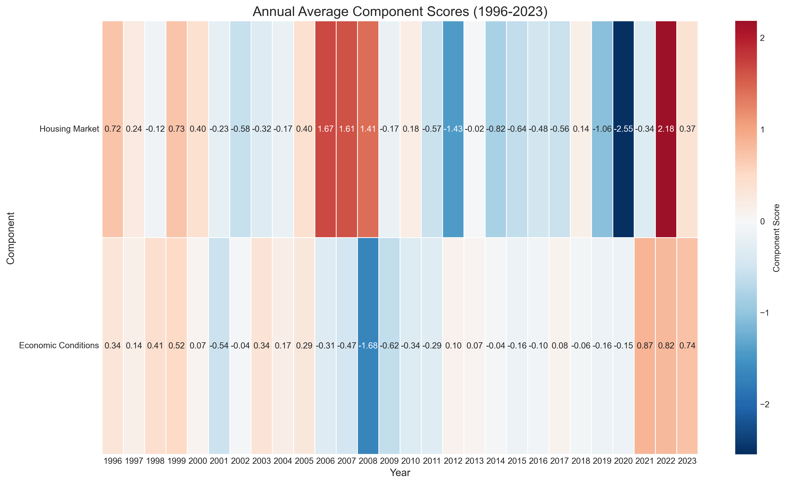
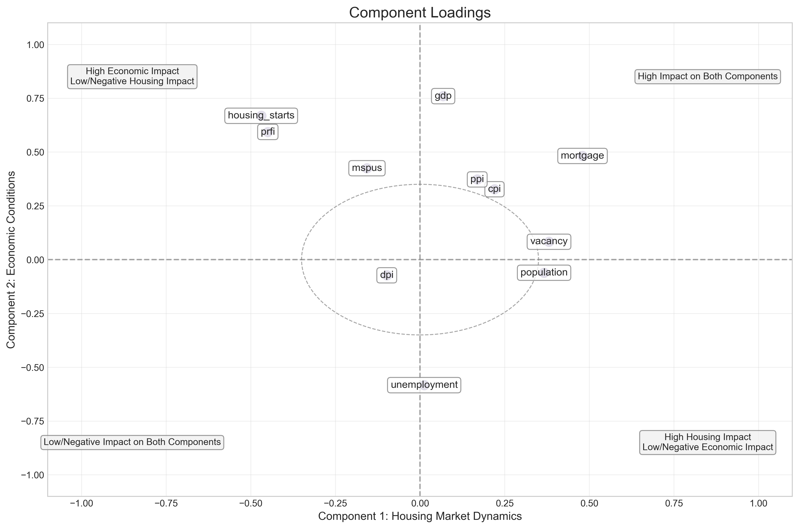
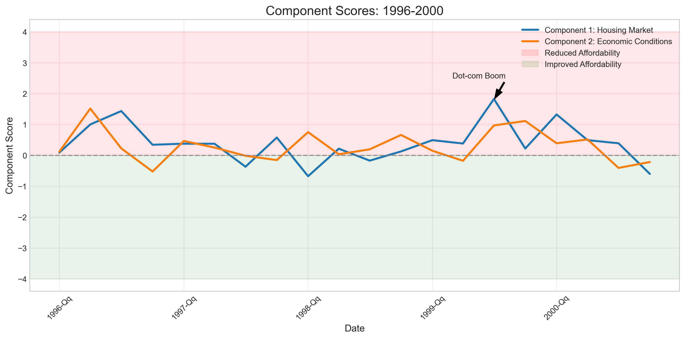
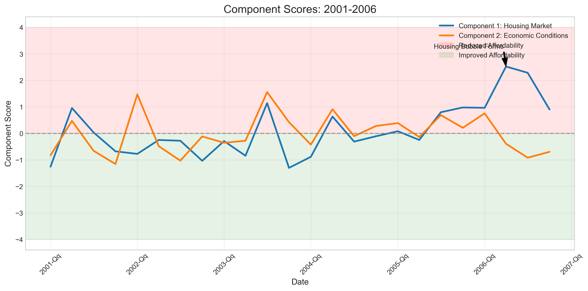
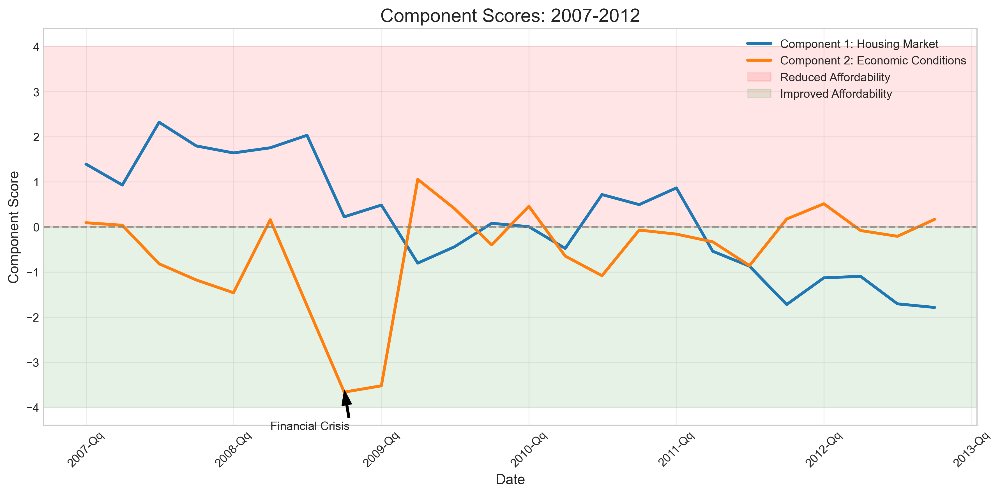
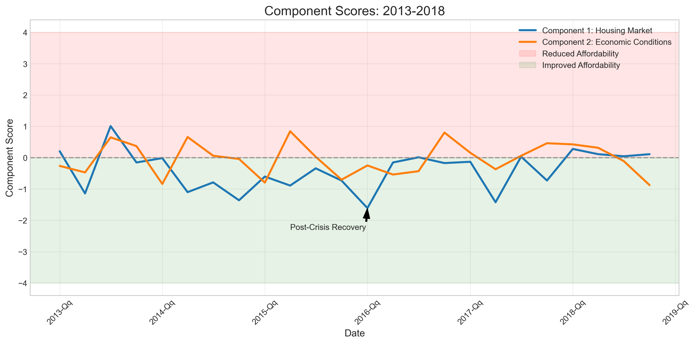
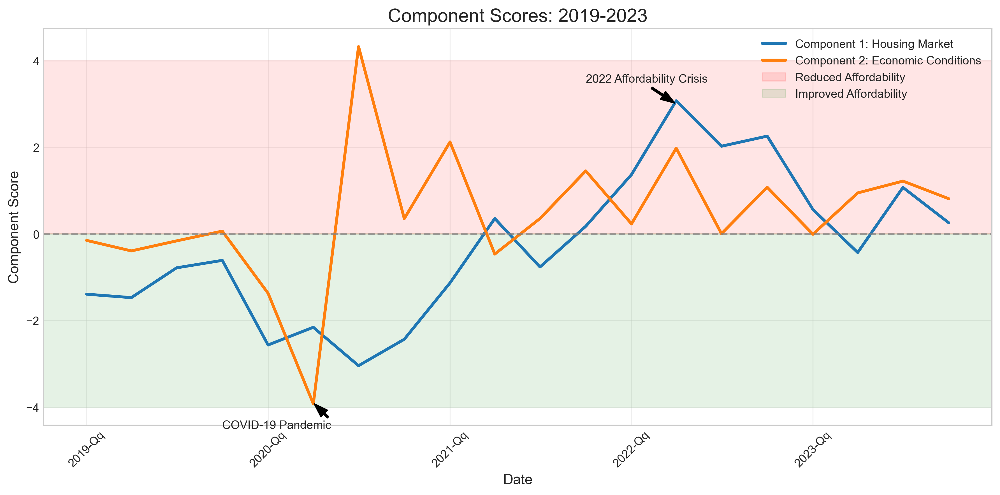
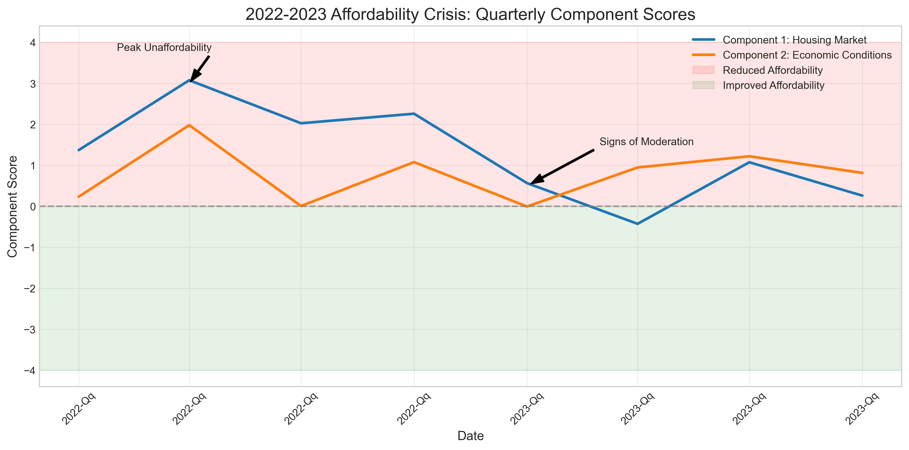
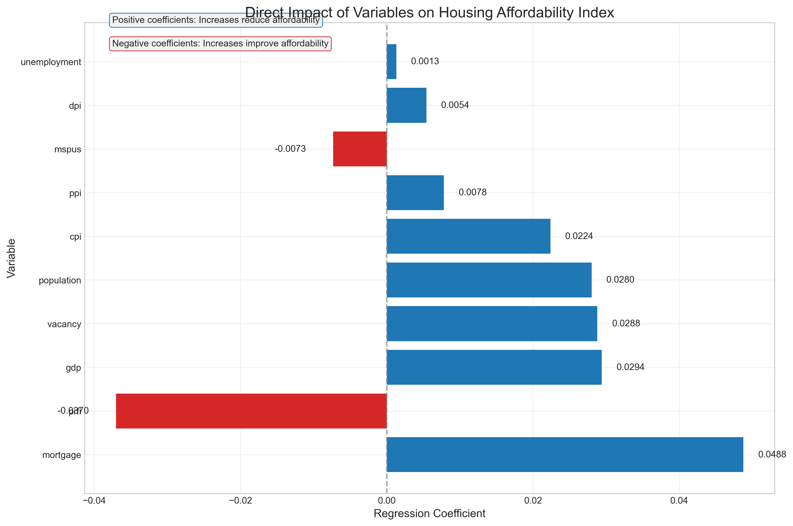

Housing Affordability Analysis: Year-by-Year Documentation
Introduction
This document provides a comprehensive analysis of housing affordability in the United States from 1996 to 2023, using Partial Least Squares (PLS) regression analysis. The analysis examines how various economic and housing market factors influence the Housing Affordability Index (HAI) over time.

Figure 1: Annual Component Scores (1996-2023)
Methodology
Data Sources and Variables
The analysis incorporates 11 key variables that influence housing affordability:
| Variable |
Description |
Source |
Type of Change Measured |
| Housing Starts |
New residential construction starts |
Federal Reserve |
Percent change |
| PRFI |
Private Residential Fixed Investment |
Federal Reserve |
Percent change |
| Vacancy Rate |
Housing vacancy rate |
Census Bureau |
Absolute change |
| Population |
US population |
Census Bureau |
Percent change |
| DPI |
Disposable Personal Income |
Federal Reserve |
Percent change |
| Unemployment |
Unemployment rate |
Bureau of Labor Statistics |
Absolute change |
| Mortgage Rate |
30-year fixed mortgage rate |
Federal Reserve |
Absolute change |
| MSPUS |
Median Sales Price of Houses |
Census Bureau |
Percent change |
| CPI |
Consumer Price Index |
Bureau of Labor Statistics |
Growth rate |
| PPI |
Producer Price Index |
Bureau of Labor Statistics |
Percent change |
| GDP |
Gross Domestic Product |
Bureau of Economic Analysis |
Percent change |
Data Preprocessing
For each variable, we:
- Calculate quarter-over-quarter changes (percent change for most variables, absolute change for rates)
- Normalize using max absolute value scaling:
\[
x_{normalized} = \frac{\Delta x}{\max(|\Delta x|)}
\]
This normalization method:
- Preserves the direction of change
- Bounds values between -1 and 1
- Maintains relative magnitude of changes
- Allows comparison between variables on different scales
PLS Regression Model
The PLS regression model identifies underlying components that explain the variation in housing affordability. The model:
- Extracts components that maximize the covariance between predictors and the HAI
- Determines the optimal number of components using Residual Variance Indicator (RVI)
- Calculates component scores and loadings
- Derives regression coefficients for direct interpretation
The final model uses 2 components and achieves an R² of 0.3913, explaining 39.13% of the variance in housing affordability.

Figure 2: Component Loadings - Relationship between variables and components
Component Interpretation
The PLS analysis identified two key components driving housing affordability:
Component 1: Housing Market Dynamics
This component primarily captures housing market conditions and financing factors.
Significant loadings (|loading| > 0.35):
- Mortgage rates (+0.4801): Higher mortgage rates reduce affordability
- Housing starts (-0.4693): Lower construction activity reduces affordability
- PRFI (-0.4496): Lower residential investment reduces affordability
- Vacancy (+0.3810): Higher vacancy rates indicate reduced demand
- Population (+0.3664): Population growth creates housing pressure
A positive score on this component generally indicates reduced affordability due to housing market pressures.
Component 2: Economic Conditions
This component reflects broader economic factors affecting housing affordability.
Significant loadings (|loading| > 0.35):
- GDP (+0.7597): Strong economic growth can reduce affordability
- Housing starts (+0.6682): In economic context, high starts can indicate market heat
- PRFI (+0.5933): High investment can signal market heat
- Unemployment (-0.5834): Lower unemployment increases demand and reduces affordability
- Mortgage (+0.4817): Economic growth often correlates with higher rates
- MSPUS (+0.4247): Rising prices reduce affordability
- PPI (+0.3726): Higher construction costs reduce affordability
A positive score on this component generally indicates reduced affordability due to economic pressures.
Year-by-Year Analysis
1996-2000: Pre-Housing Boom
Average HAI: 0.88
- Component 1: +0.3944 (reduced affordability)
- Component 2: +0.2948 (reduced affordability)
Key Events and Trends:
- 1996-Q2: Strong positive scores in both components (Component 1: +1.00, Component 2: +1.52)
- 1996-Q3: Continued housing market pressure (Component 1: +1.44)
- 1998-Q1: Temporary improvement in housing market conditions (Component 1: -0.67)
- 1999-Q3: Significant deterioration in affordability (Component 1: +1.83, Component 2: +0.97)
- 2000-Q1: Housing market pressure remains high (Component 1: +1.33)
Analysis:
This period was characterized by the early stages of housing market pressure, with mortgage rates and housing market activity being the primary drivers. The economy was strong, with GDP growth contributing to reduced affordability. The dot-com boom was in full swing, creating economic pressure on housing affordability.

Figure 3: Component Scores 1996-2000
2001-2006: Housing Boom
Average HAI: 1.01
- Component 1: +0.1276 (slightly reduced affordability)
- Component 2: -0.0166 (neutral)
Key Events and Trends:
- 2001-Q1: Significant improvement in affordability (Component 1: -1.26, Component 2: -0.82)
- 2001-Q2: Temporary reversal (Component 1: +0.96)
- 2002-Q1: Mixed signals (Component 1: -0.77, Component 2: +1.47)
- 2003-Q3: Sharp deterioration in affordability (Component 1: +1.14, Component 2: +1.56)
- 2006-Q2 & Q3: Extreme housing market pressure (Component 1: +2.52 and +2.29)
Analysis:
This period captures the housing boom, with initial affordability improvements following the dot-com bust, followed by the development of the housing bubble. The period ends with extreme housing market pressure in 2006, setting the stage for the subsequent financial crisis. Low interest rates early in the period temporarily improved affordability, but speculative activity in housing markets eventually dominated.

Figure 4: Component Scores 2001-2006
2007-2012: Financial Crisis and Recovery
Average HAI: 0.87
- Component 1: +0.1736 (slightly reduced affordability)
- Component 2: -0.5486 (improved affordability)
Key Events and Trends:
- 2007-Q1 to 2008-Q2: Continued housing market pressure despite economic weakening
- 2008-Q3: Housing market pressure remains high (Component 1: +2.03)
- 2008-Q4: Economic collapse (Component 2: -3.67)
- 2009-Q1: Continued economic weakness (Component 2: -3.52)
- 2009-Q2: Housing market conditions begin to improve (Component 1: -0.80)
- 2011-Q4: Significant improvement in housing market conditions (Component 1: -1.72)
Analysis:
This period captures the financial crisis and its aftermath. Initially, housing market conditions remained tight despite economic deterioration. The economic collapse in late 2008 dramatically improved affordability through Component 2, while housing market conditions gradually improved from 2009 onwards. By 2011-2012, both components were contributing to improved affordability.

Figure 5: Component Scores 2007-2012
2013-2018: Post-Crisis Period
Average HAI: 0.80
- Component 1: -0.3967 (improved affordability)
- Component 2: -0.0349 (neutral)
Key Events and Trends:
- 2013-Q3: Temporary housing market pressure (Component 1: +1.01)
- 2014-Q2: Improved housing market conditions (Component 1: -1.10)
- 2015-Q4: Continued improvement (Component 1: -0.73, Component 2: -0.70)
- 2016-Q1: Strong improvement in housing market conditions (Component 1: -1.61)
- 2017-Q2: Further improvement (Component 1: -1.42)
- 2018-Q4: Economic conditions begin to improve affordability (Component 2: -0.87)
Analysis:
This post-crisis period was characterized by generally improving housing affordability, particularly through the housing market component. Low mortgage rates, increased housing starts, and recovering residential investment all contributed to improved affordability. Economic conditions were relatively neutral in their impact on affordability during this period.

Figure 6: Component Scores 2013-2018
2019-2023: Recent Period
Average HAI: 0.99
- Component 1: -0.2798 (improved affordability)
- Component 2: +0.4253 (reduced affordability)
Key Events and Trends:
- 2019-Q1 & Q2: Strong improvement in housing market conditions (Component 1: -1.39 and -1.47)
- 2020-Q1 & Q2: Pandemic impact - dramatic improvement in housing market conditions (Component 1: -2.56 and -2.15)
- 2020-Q2: Economic collapse due to pandemic (Component 2: -3.92)
- 2020-Q3: Strong economic rebound (Component 2: +4.33)
- 2021-Q4: Economic pressure builds (Component 2: +1.46)
- 2022-Q2: Extreme deterioration in affordability (Component 1: +3.08, Component 2: +1.98)
- 2022-Q3 & Q4: Continued high pressure on affordability
- 2023-Q1: Beginning of moderation (Component 1: +0.56, Component 2: -0.01)
Analysis:
This period captures the pre-pandemic conditions, the COVID-19 shock, and the subsequent recovery and inflation. The pandemic initially improved affordability through both components, but the recovery brought unprecedented dual pressure on affordability by 2022, with both housing market conditions and economic factors contributing to reduced affordability. Early 2023 showed signs of moderation.

Figure 7: Component Scores 2019-2023
Detailed Analysis of 2022-2023: The Affordability Crisis
The 2022-2023 period deserves special attention as it represents an unprecedented affordability crisis with unique characteristics.
Quarter-by-Quarter Analysis
Q1 2022:
- Component 1: +1.37 (Strong housing market pressure)
- Component 2: +0.23 (Mild economic pressure)
- Key drivers: Rising mortgage rates, declining housing starts
Q2 2022 (Peak Unaffordability):
- Component 1: +3.08 (Extreme housing market pressure)
- Component 2: +1.98 (Strong economic pressure)
- Key drivers: Mortgage rate spike, strong GDP growth, low unemployment
Q3 2022:
- Component 1: +2.03 (High housing market pressure)
- Component 2: +0.01 (Neutral economic pressure)
- Key drivers: Sustained high mortgage rates, declining starts
Q4 2022:
- Component 1: +2.26 (High housing market pressure)
- Component 2: +1.08 (Moderate economic pressure)
- Key drivers: Continued high rates, strong economic indicators
Q1 2023:
- Component 1: +0.56 (Moderating housing market pressure)
- Component 2: -0.01 (Neutral economic pressure)
- Key drivers: Stabilizing mortgage rates, gradual increase in housing starts
Q2 2023:
- Component 1: -0.43 (Improving housing market conditions)
- Component 2: +0.95 (Moderate economic pressure)
- Key drivers: Mortgage rate stabilization, improving housing starts, strong economic indicators
Q3 2023:
- Component 1: +1.07 (Renewed housing market pressure)
- Component 2: +1.22 (Increased economic pressure)
- Key drivers: Mortgage rate volatility, economic resilience
Q4 2023:
- Component 1: +0.26 (Mild housing market pressure)
- Component 2: +0.82 (Moderate economic pressure)
- Key drivers: Stabilizing mortgage rates, balanced economic indicators

Figure 8: 2022-2023 Affordability Crisis - Quarterly Component Scores
Unique Characteristics of the 2022-2023 Crisis
- Unprecedented Dual Pressure:
- First time both components showed strong positive values simultaneously
- Housing market stress (Component 1) reached historic high of +3.08
- Economic factors (Component 2) amplified affordability challenges
- Market Evolution:
- Q2 2022: Peak of affordability crisis
- Q3-Q4 2022: Sustained high pressure
- Q1-Q2 2023: Signs of moderation
- Q3-Q4 2023: Mixed signals with some improvement
- Contributing Factors:
- Mortgage rates: Highest levels since 2008
- Housing starts: Significant decline
- GDP: Strong growth despite market pressures
- Employment: Robust job market maintaining demand
Direct Impact of Variables on HAI
The regression coefficients provide insight into the direct impact of each variable on the Housing Affordability Index:

Figure 9: Direct Impact of Variables on Housing Affordability Index
| Variable |
Coefficient |
Impact on Affordability |
| Mortgage |
+0.0488 |
Strongest negative impact |
| PRFI |
-0.0370 |
Strong negative impact |
| GDP |
+0.0294 |
Strong negative impact |
| Vacancy |
+0.0288 |
Moderate negative impact |
| Population |
+0.0280 |
Moderate negative impact |
| CPI |
+0.0224 |
Moderate negative impact |
| Housing Starts |
-0.0146 |
Moderate positive impact |
| MSPUS |
-0.0073 |
Slight positive impact |
| PPI |
+0.0078 |
Slight negative impact |
| DPI |
+0.0054 |
Slight negative impact |
| Unemployment |
+0.0013 |
Minimal impact |
Note: Positive coefficients indicate that increases in the variable reduce affordability, while negative coefficients indicate that increases improve affordability.
Conclusion
The PLS regression analysis provides valuable insights into the drivers of housing affordability over the past 27 years:
1. Two Key Components:
- Housing market conditions (mortgage rates, starts, investment)
- Broader economic factors (GDP, employment, prices)
2. Evolving Drivers:
- Different periods show distinct patterns of influence
- The relative importance of components shifts over time
- Recent periods show unique combinations of pressures
3. 2022 Affordability Crisis:
- Unique in showing strong positive scores in both components
- Housing market pressures (high mortgage rates, low starts)
- Economic pressures (strong GDP, low unemployment)
4. 2023 Trends:
- Housing market pressures moderating
- Economic factors reaching equilibrium
- Overall affordability showing signs of improvement
5. Model Performance:
- R² = 0.3913 indicates reasonable explanatory power
- Complex nature of housing affordability
- Potential for additional factors not captured in current variables
This analysis demonstrates the complex interplay of factors affecting housing affordability and provides a framework for understanding past trends and potential future developments in the housing market.